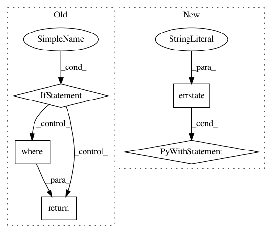

b218e7c6d97283ccbc6185dbe287302fc280191a,lib/matplotlib/scale.py,SymmetricalLogTransform,transform_non_affine,#SymmetricalLogTransform#Any#,487
Before Change
log = sign * self.linthresh * (
self._linscale_adj +
ma.log(np.abs(masked) / self.linthresh) / self._log_base)
if masked.mask.any():
return ma.where(masked.mask, a * self._linscale_adj, log)
else:
return log
def inverted(self):
return InvertedSymmetricalLogTransform(self.base, self.linthresh,
self.linscale)
After Change
def transform_non_affine(self, a):
abs_a = np.abs(a)
with np.errstate(divide="ignore", invalid="ignore"):
out = np.sign(a) * self.linthresh * (
self._linscale_adj +
np.log(abs_a / self.linthresh) / self._log_base)
inside = abs_a <= self.linthresh
out[inside] = a[inside] * self._linscale_adj
return out
def inverted(self):
In pattern: SUPERPATTERN
Frequency: 3
Non-data size: 5
Instances
Project Name: matplotlib/matplotlib
Commit Name: b218e7c6d97283ccbc6185dbe287302fc280191a
Time: 2019-05-21
Author: efiring@hawaii.edu
File Name: lib/matplotlib/scale.py
Class Name: SymmetricalLogTransform
Method Name: transform_non_affine
Project Name: matplotlib/matplotlib
Commit Name: b218e7c6d97283ccbc6185dbe287302fc280191a
Time: 2019-05-21
Author: efiring@hawaii.edu
File Name: lib/matplotlib/scale.py
Class Name: InvertedSymmetricalLogTransform
Method Name: transform_non_affine
Project Name: scipy/scipy
Commit Name: ae151484780b389b5c7b4530c9ac1ef4bb659e23
Time: 2020-01-13
Author: rlucas7@users.noreply.github.com
File Name: scipy/special/_basic.py
Class Name:
Method Name: factorial